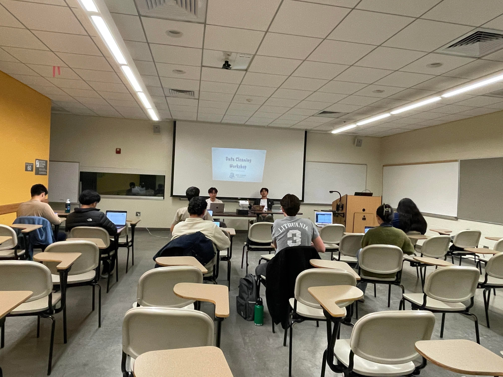
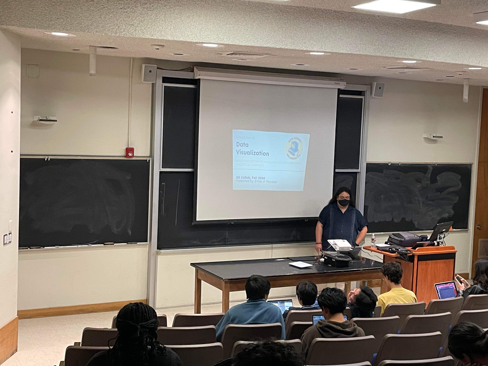
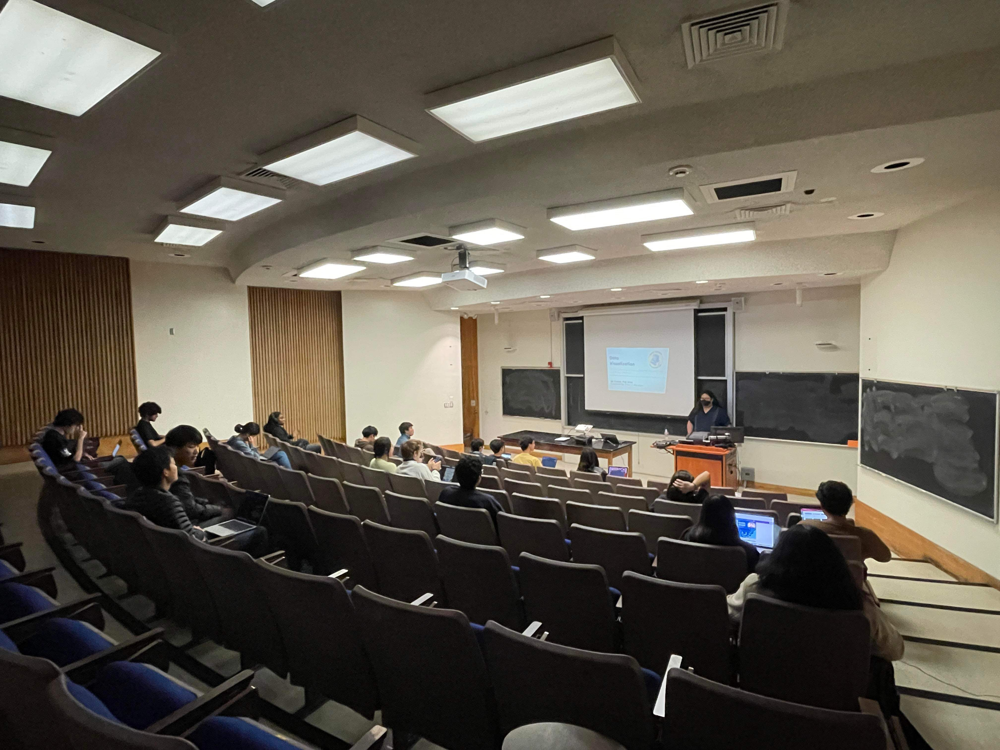

2025
Stats R Fun #4
Thursday, January 21, 2025 @ TD-W 2600

On January 21, 2025, DSCollab hosted the fourth workshop of the year and the first of 2025! We explored data cleaning in python through google colab, and explored the process of converting difficult-to-manage data into a project worthy dataset! Check out the meetings page for links to the slides and material. See you all at the next one!
2024
Stats R Fun #3
Wednesday, November 13, 2024 @ Psychology 1924
 
On November 30, 2024, DSCollab hosted its third workshop of the academic year. Our graduate advisor, Ethan Marzban, presented an introduction to data visualization as a broad topic, and led a walkthrough of the popular Python library Altair! Thanks so much to everyone who showed up; the interactive worksheet and answers can be found on the meetings page!
Stats R Fun #2
Thursday, October 30, 2024 @ Psychology 1924
On Wednesday 30, 2024, DSCollab hosted its second workshop of the academic year. We delved into two of the most important and foundational structures for working with data in Python: NumPy & Pandas. These two Python packages allow for intuitive and powerful data wrangling and manipulation, and they are accessible to anyone, regardless of prior data science experience. Thank you to everyone who showed up and stay tuned for future workshops where we will explore the vast world of data science through data visualization and other exciting topics!
Boba + Study Social
Friday, October 25, 2024 @ Ai Cha & SRB

On Friday afternoon, October 25th, DSCollab had the pleasure of hosting a study jam & boba social sponsored by Ai Cha! From 2:30-3:00 pm, participants were treated to discounted boba at Ai Cha, and alongside the DSCollab staff, had in a social get-together. Then, the group walked over to the Student Resource Building and had a study jam in the 2nd Floor Conference Room from 3:00-5:00 pm. They were treated to free snacks, the expertise and advice of the staff for various stats classes, and lofi hip-hop beats to study to! Thanks to everyone who came, and for those that missed out, we hope to see you at future events!
Stats R Fun #1
Thursday, October 17, 2024 @ Psychology 1902

On Thursday, October 17th, at 6:30 pm, DSCollab hosted its first workshop of the 2024-2025 academic year. Our president, Cyrus Navasca, introduced us to many of the essential characteristics and components of python for data science! We delved into basic python syntax, data types, and importing data.
Discover Guest Speaker
Wednesday, October 16, 2024 on Zoom
On Wednesday, October 16th, from 7-8 pm, DSCollab and Delta Sigma Pi hosted a guest speaker event by Brianna Griffin, a Senior Lead Data Analyst @ Discover! Brianna shared her experiences studying at UC Santa Barbara, going through the internship process, and landing a job in the fraud prevention sector at Discover Financial Services. She discussed her day-to-day life, her role and responsibilities, and her career progression through the company. Overall, it was a very worthwhile and informative event, especially since Brianna was in our shoes not too long ago!
General Meeting #1
Wednesday, October 9, 2024 @ Psychology 1924

On Wednesday, October 9th, the officers of DS Collab hosted the first general meeting of the 2024-2025 school year! We had a great turnout of students from a variety of majors and backgrounds who were all excited to learn data science from like-minded individuals. The meeting began with introductions from our officers and turned into details about future meetings, workshops, and events. Then, we ended the night with a DS Collab / PSTAT Department / UCSB Trivia related Kahoot with giftcard prizes from the sponsor of the meeting: Woodstock’s Pizza!
Ice Cream Social
Friday, October 4, 2024 @ SRB Lawn
On Friday, October 4th, DS Collab hosted a club kickoff ice cream social at the SRB Lawn! From 3:00 to 5:00 pm, the officers connected with many current and prospective club members about the exciting world of data science! We spoke about the structure of the club, the general plan for the year, and the plethora of ways that beginners and non-majors can take their first steps. During the social, we offered a variety of ice cream treats, including classic Kirkland chocolate options and vegan alternatives. The event had a successful turnout, with students mingling, making new acquaintances, and nurturing a strong sense of the data science community through this enjoyable gathering.
Professor Speaker Panel
Monday, April 8, 2024 @ Arts Building 1349
On Monday, April 8th, at the UCSB Arts Building, we had the honor of hosting two esteemed professors in Statistics and Data Science, Dr. Katie Coburn and Dr. Rituparna Sen, for our Professor Panel event in collaboration with UCSB’s Delta Sigma Pi. Throughout the panel, both professors shared their experiences and perspectives on Statistics and Data Science and offered insights into the current industry landscape, as well as advice on pursuing an academic career or extended education in the field. A highlight of the event was the emphasis placed on pursuing an academic route within Statistics and Data Science. Dr. Coburn and Dr. Sen provided invaluable insights into the academic journey, discussing topics such as graduate studies, research opportunities, and the importance of mentorship in shaping one’s scholarly pursuits. Approximately 40 students were able to get questions answered and gain a deeper understanding and inspiration for their academic and professional endeavors in Statistics and Data Science.
MOSAIKS Speaker Event
January 19, 2024
On Friday, January 19th, at UCSB’s North Hall, we had the pleasure of hosting speaker Carlo Broderick, who received a Master’s degree in environmental data science at UC Santa Barbara’s Bren School of Environmental Science and Management. He came to speak about MOSAIKS (Multi-task Observation using Satellite Imagery & Kitchen Sinks), a new approach to analyzing satellite imagery with machine learning, for our Data Science Collaborative members.
The event provided a valuable opportunity for our curious-minded members to delve into the intricacies of MOSAIKS and its transformative potential. Carlo elucidated how MOSAIKS transforms satellite images into tabular data (features). One of the most remarkable aspects highlighted was MOSAICS’ remarkable ability to generalize across diverse tasks using a unified set of features, ensuring accessibility and effectiveness across a broad spectrum of applications.
Through engaging with Carlo during the speaker event, our members gained a deeper understanding of MOSAICS’ underlying principles and its practical implications. Carlo’s expertise and passion for leveraging machine learning to address real-world challenges shone through, inspiring our members to explore the intersection of data science and environmental analysis further.